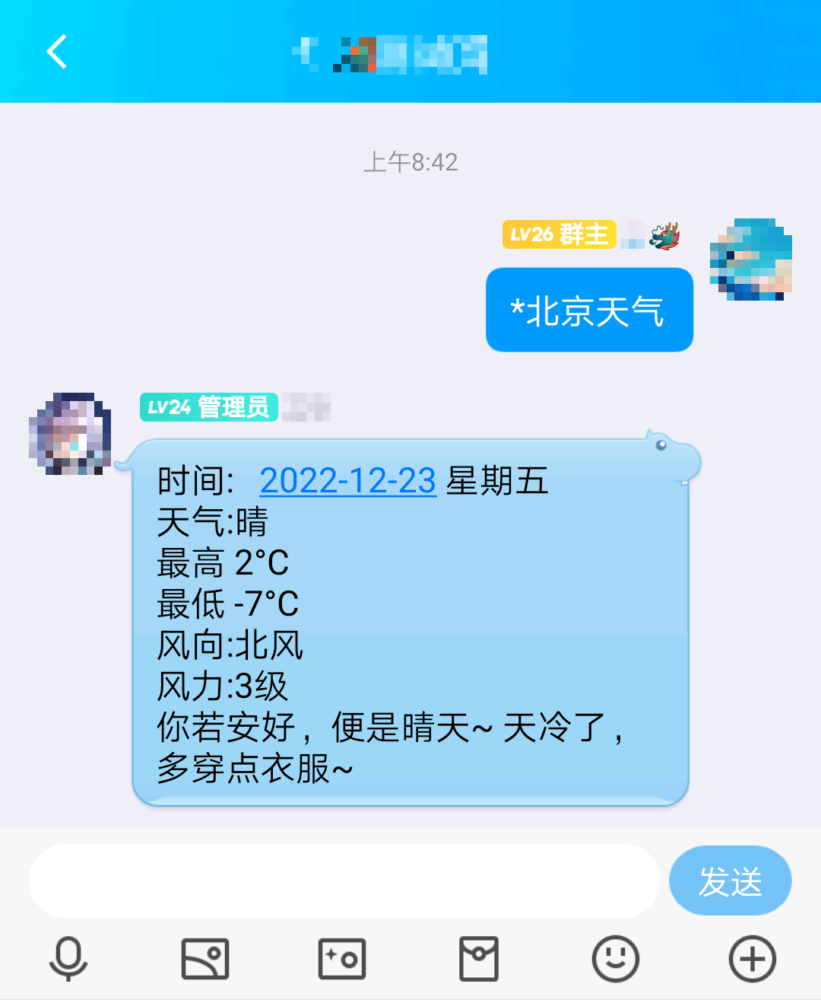

机器人官方使用QQ群：512749447
1.一些小问题的问题
2.智能聊天功能无法使用,该问题暂时无法解决,请勿触发，这将导致程序崩溃!!!
注:ctrl+f 可快速搜索所需的内容
 使用方式为: 在聊群中 *地名天气
在私聊中: 地名天气
例子: *北京天气 北京天气
使用方式为: 在聊群中 *地名实时天气
在私聊中: 地名实时天气
例子: *北京实时天气 北京实时天气
使用方式为: 在群聊中: *翻译:内容
在私聊中: 翻译:内容
例子: *翻译:red 翻译:red
使用方式为: 在聊群中: *石头剪刀布之我出内容
在私聊中: 石头剪刀布之我出内容
内容可以为: 剪刀 石头 布
例子: *石头剪刀布之我出剪刀 石头剪刀布之我出剪刀
使用方式:
在聊群中: *点歌:歌名
在私聊中: 点歌:歌名
例子: *点歌:你的答案 点歌:你的答案
该功能作用是向开发者发送qq邮件
使用方式: 建议:建议内容
注:在聊群中不管什么功能都要 * 才能使用
1.对一些已知问题进行了处理
2.添加了游戏功能
3.对随机句子进行了修改